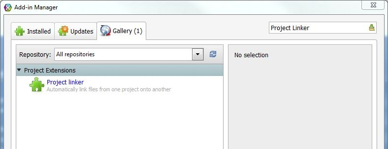
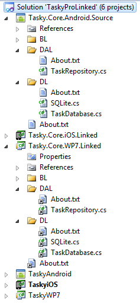
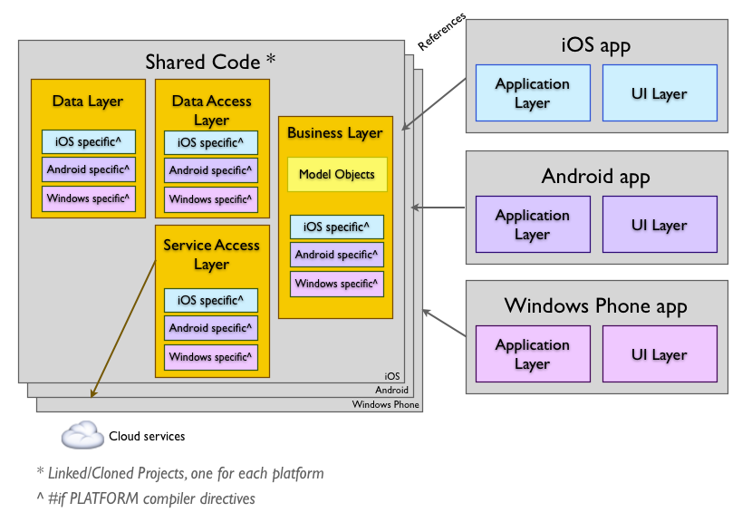

What is is, and why?
This addin was developed in order to automatically create and maintain links from a source project to a set of target projects, in order to make code sharing between different plataforms a more friendly task. It is based on the Visual Studio Project Linker extension.
The main reason behind the development of this addin was that I was working on a project that targets multiple plataforms using the great MvvmCross library, including iOS, Android, Windows, Mac and Linux, and PCL support was very lacky on Xamarin Studio, and even on Visual Studio 2012 it had its problems. Also, PCL programming imposes some restrictions that I found harder to workaround than using a third party plugin to do the file linking between the projects.
The inner workings of this approach are also described in Xamarin's document Sharing Code Options, item " 2. File Linking to Separate Projects ", and also applies to item " 3. Clone Project Files ", which I personally prefer.
Features
- Automatically replicates "new", "delete" and "rename" operations from the source to the target projects
- Allows to perform a manual synchronization, which is useful if you use both Visual Studio and Xamarin Studio or if someone else does not have the plugin and changes the project
Benefits
The following information was copied from Xamarin's Sharing Code Options document.
- Allows you to share code across multiple projects.
- Platform-specific projects can each have different compiler directives defined, so you can branch code based on the platform (eg. using
#if __ANDROID__or#if __IOS__). - Platform-specific projects can include platform-specific references. The code using these references can be managed with compiler directives.
How to install
It is very easy to install the plugin: access the menu Tools -> Add-in Manager (on Mac it is located in the application menu) and head over to the Gallery tab. Use the search box at the top right to search for "Project Linker", then click the "Install..." button. That's all.

How to use
After the addin is instaled, open any solution with more than one project, and select the menu Project -> Configure project link..., and select the source and target projects. Then, when any add, remove or rename operation is performed on the source project, it will be automatically replicated to all target projects.
To stop the linking projects just open the configuration dialog again and select the option Do not link any projects
To manually sync the source project to all targets (for example, in case you start using the addin on an existent project), open the Configure project link dialog and click the Sync buton.
Problems? Bugs?
If you found a bug or want to suggest a new feature or improvement, please use the issues pages.
Example
The following information was copied from Xamarin's Sharing Code Options document.
The project structure usually look like this:

Note that the linked projects are the Linked prefix, which is not mandatory but helps to identify them on the solution. The conceptual architecture is shown in this diagram:
